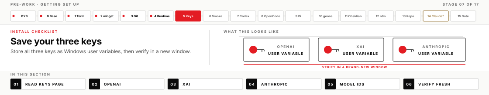

Reference · keep this open during install
Your API keys
Three keys run your whole week. This page explains what they are, where to put them on your laptop, how to check they work, and how to kill one if it leaks. Setting them takes about ten minutes.

What an API key is
An API key is a long secret string that identifies you to an AI provider's servers. When one of your tools sends a request to OpenAI, xAI, or Anthropic, it attaches the key, and the provider bills that request to whoever owns the key.
This is a different door than the one most people use. Consumer apps like ChatGPT or Claude.ai are reached by signing in with an email and password against a monthly plan. A key skips all of that and talks straight to the provider's platform, metered per request. You will never sign into a consumer subscription anywhere in this course.
That distinction matters at the keyboard, because several tools you're about to install offer both doors on the same screen. When a tool asks how you want to authenticate, you always choose the API key path — never "Sign in with ChatGPT," "Sign in with Claude," or a browser login.
The three keys and what each one drives
| Key | Starts with | Variable name | Drives |
|---|---|---|---|
| OpenAI | sk-proj- | OPENAI_API_KEY | The Codex app (your home tool all week), plus the LLM step in n8n |
| xAI | xai- | XAI_API_KEY | OpenCode, your second engine for the twin-engine work |
| Anthropic | sk-ant-api03- | ANTHROPIC_API_KEY | Claude Code, and an alternate provider for Pi and goose |
Pi and goose are deliberately provider-agnostic: each one talks to any of the three, and you choose which by naming a model when you run it. That flexibility is the point — part of what this course teaches is running the same demand through different engines and owning the verdict when they disagree.
The prefixes are worth memorising. When a tool refuses to authenticate, the first thing to check is whether the string you pasted starts with the right characters for that provider. Pasting an OpenAI key where a tool expects an xAI one is the most common setup failure there is, and it produces an error message that rarely says so.
Where the keys live on your laptop
You'll store each key once as a Windows user environment variable — a named value that Windows hands to every program you launch. Set it once and every tool finds it, which is why you won't be pasting keys into individual apps all week.
"User" is the scope that matters here. It means the value belongs to your Windows account, persists across restarts, and needs no administrator rights to set.
Set a key
Open PowerShell and run this, one key at a time. It prompts you to paste the key rather than taking it as part of the command, which keeps the secret out of your shell history:
$key = Read-Host 'Paste OPENAI_API_KEY'
[Environment]::SetEnvironmentVariable('OPENAI_API_KEY', $key, 'User')
$env:OPENAI_API_KEY = $key
$key = $nullThose four lines do four things. The first collects the key without echoing it. The second writes it permanently for your Windows account. The third also sets it in the window you're sitting in, so you don't have to reopen anything to keep working. The fourth clears the temporary variable.
Repeat all four lines for XAI_API_KEY and ANTHROPIC_API_KEY, changing the name in the first two lines each time.
setx
Most guides on the internet reach for setx NAME "value". It works, but it silently truncates anything past 1024 characters and it puts the key itself into your command history where the next person at your keyboard can scroll back to it. The Read-Host form above has neither problem, and it is the form the course uses throughout.Check they landed
Open a new PowerShell window — a fresh one, because a window that was already open when you set a variable never sees it — and run:
'OPENAI_API_KEY','XAI_API_KEY','ANTHROPIC_API_KEY' | ForEach-Object {
'{0}: user={1} session={2}' -f $_,
[Environment]::GetEnvironmentVariable($_,'User').Length,
(Get-Item "env:$_" -EA SilentlyContinue).Value.Length
}You want three lines, each showing two matching non-zero numbers. This prints only the length of each key, never the key itself, so it's safe to run with someone looking over your shoulder or on a shared screen.
If a line shows user=0, the key exists only in the window you typed it in and will vanish when you close it — run the set command again and check the variable name for typos. If it shows session=0, the value is saved correctly but this window predates it; open another new window.
What your tools do with the keys
Most of the stack reads these variables automatically the moment they're set. Two tools need a little more, and it's worth knowing which is which before you start installing.
| Tool | How it gets the key |
|---|---|
| OpenCode | Reads XAI_API_KEY from the environment and enables the provider on its own. Nothing to configure. |
| Pi | Reads all three from the environment. Because it sees more than one, you name the model explicitly when you run it. |
| goose | Reads the provider key from the environment, and needs GOOSE_PROVIDER and GOOSE_MODEL so it knows which one to use. Thursday also uses GOOSE_MODE (approve vs auto) as a real autonomy dial — not only the key. |
| Claude Code | Reads ANTHROPIC_API_KEY and asks you to approve it once on first launch. |
| Codex app | Doesn't read the environment at all. You paste the key into its sign-in screen once — see below. |
| n8n | Doesn't read the environment. You paste the OpenAI key into a credential inside its browser UI during Thursday's exercise. |
The Codex app is the exception worth reading twice, because it surprises people. It is a window rather than a command line, and it never looks at OPENAI_API_KEY. Setting the variable does nothing for it.
Instead, on the app's signed-out screen you choose Sign in another way, paste the key, and select Continue. It stores the key from then on. The large button beside that option offers to sign in with a ChatGPT account — that is the subscription path, and it is not the one you have.
You can confirm which path took hold from the profile menu, which reports either an API key or an account name. If it shows an account, log out there and sign in again the other way.
One line of configuration makes that mistake impossible to repeat, and the install guide has you write it: forced_login_method = "api" in %USERPROFILE%\.codex\config.toml. After that, an accidental account sign-in fails politely instead of stranding you on a screen you can't complete.
What the key buys you there is all of the app's local work — projects, worktrees, code review, skills, scheduled tasks, its built-in browser. What it doesn't buy is the cloud half of the product: Codex cloud, Sites, GitHub and Slack delegation, and voice all require a ChatGPT subscription. Nothing this week needs them, but it explains why an online tutorial may point at a button you don't have.
Spending, and why your key might stop working
Every request you make costs a fraction of a cent against the key's account, and the keys you were issued carry a hard spending cap. A cap is a good thing: it means a runaway agent loop costs the course some money rather than an unbounded amount. But it does mean a key can stop working mid-week, and the failure looks like a sudden authentication error rather than a bill.
The signature is an HTTP 429 response, sometimes worded as insufficient quota or spend limit exceeded. If a tool that worked yesterday starts failing today and nothing else changed, check that before you start reinstalling anything. Post which key and roughly what you were running — raising a cap is a small change at the console end, so it's worth asking rather than assuming your install broke.
The habits that keep you well inside the cap are the same ones that make you a better operator, which is not a coincidence. Bound the work in your Direction Brief so the machine isn't looping on an unclear goal. Stop a run that has plainly lost the chat rather than watching it spend. Point at the folder that matters instead of the whole disk.
Keeping keys out of the course files
Never paste a key value into the course repository, an operator file, a module exercise, or a chat transcript you plan to share. Use the Windows environment variables and each tool's sign-in flow instead. Those keep the credential separate from the work the AI reads and edits.
Some of your tools do write keys to files on your own disk — Codex keeps one in %USERPROFILE%\.codex\auth.json, Pi in %USERPROFILE%\.pi\agent\auth.json, OpenCode in %USERPROFILE%\.local\share\opencode\auth.json. Those live in your user profile rather than in any project folder, so the course files do not contain the credentials. They're also why, on a shared or loaner laptop, deleting those folders at the end of the week is worth doing.
Revoking a key
If a key is exposed — pasted into the wrong window, saved into a project file, shared on a screen, or you simply aren't sure — report it straight away so it can be revoked. A revoked key stops working immediately and everywhere, and a replacement can be issued in its place. Say which key and roughly when — revoking and reissuing happens at the provider console, which is not somewhere you have access, so this is a message to send rather than a thing to attempt yourself.
Once you have the replacement, set it exactly as you did the first time, then open a new PowerShell window so your tools pick it up. The Codex app needs signing in again through Sign in another way, since it stored the old key rather than reading the variable each time.